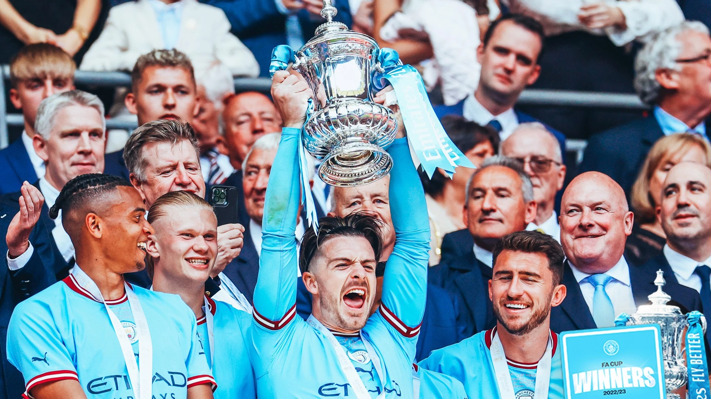

On 5 August 2021, Manchester City announced that they had signed Grealish on a six-year contract that would run until 2027. It was reported by numerous outlets that the transfer fee paid to Aston Villa was for the amount of £100 million, which at the time constituted the most expensive transfer of an English player ever, as well as the highest fee ever paid by a British club. Grealish was given the number 10 shirt by the team which had previously been worn by striker Sergio Agüero, who departed from City the month prior after ten seasons with the team. Grealish made his debut for City in a 1–0 defeat against Tottenham Hotspur on the first matchday of the 2021–22 Premier League. On 21 August, Grealish scored his first goal for the club in a 5–0 win over Norwich City. He scored on his Champions League debut on 15 September, putting City 4–2 up in an eventual 6–3 home victory over RB Leipzig in the opening group stage match. He also assisted Nathan Aké's goal for City's opener. In December 2021, Grealish and teammate Phil Foden were dropped for a game against Newcastle after a nightclub visit. Of his time at Manchester City that season, Grealish admitted that adapting to the club’s style of play had been "much more difficult" than he imagined, despite the fact that his manager Pep Guardiola believed that he was successfully fulfilling his role. Grealish was later defended from his critics by his teammate Kevin De Bruyne, who voiced his belief that Grealish was an easy target for criticism because of the media spotlight on English players. Moreover, İlkay Gündoğan claimed that Grealish was “so misunderstood by some of the media”.

|
 |  |